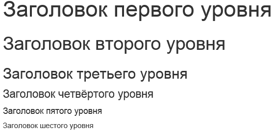
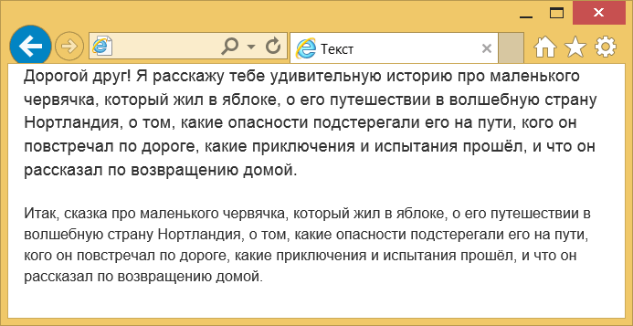
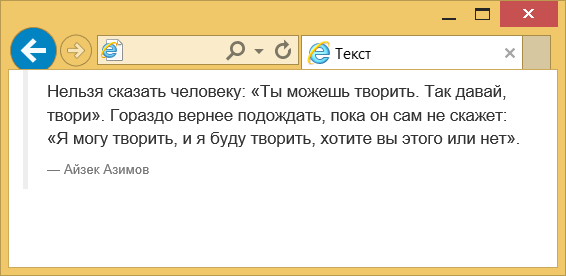
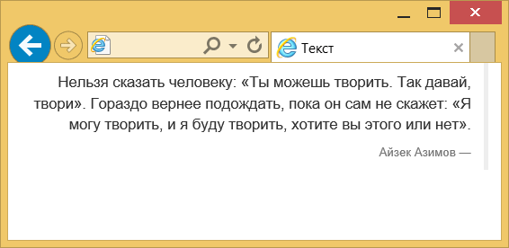
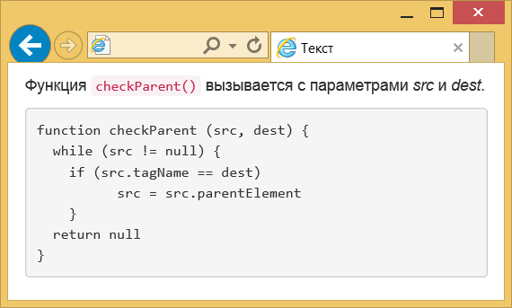

Текст
По умолчанию размер шрифта основного текста установлен как 14px, а межстрочное расстояние (значение свойства line-height) — 1.428.
Между абзацами текста (элемент
Заголовки
Для заголовков применяются знакомые из HTML элементы с
Их стиль немного отличается от исходного:
Заголовки допустимо немного уменьшить самостоятельно, если внутрь вставить элемент
Заголовок первого уровня
Такого типа заголовки по виду несколько иные и предназначены для других разделов сайта, например, боковой панели.
Лид
Лидом в журналистике называют первый абзац статьи привлекающий внимание и дающий краткое представление о содержании статьи.
Обычно он по своему виду немного отличается от основного текста.
Чтобы указать лид достаточно к абзацу или колонке добавить класс lead, как показано в примере ниже.
Дорогой друг! Я расскажу тебе удивительную историю про маленького червячка, который жил в яблоке, о его путешествии в волшебную страну Нортландия, о том, какие опасности подстерегали его на пути, кого он повстречал по дороге, какие приключения и испытания прошёл, и что он рассказал по возвращению домой.
Итак, сказка про маленького червячка, который жил в яблоке, о его путешествии в волшебную страну Нортландия, о том, какие опасности подстерегали его на пути, кого он повстречал по дороге, какие приключения и испытания прошёл, и что он рассказал по возвращению домой.
Результат данного примера:
Аббревиатура
Аббревиатура это сложносокращённое слово (колхоз) или слово, полученное из первых букв слов предложения (КГБ).
Для обозначения аббревиатур в тексте применяется элемент
CSS — набор параметров форматирования, который применяется к элементам документа, чтобы изменить их внешний вид.
Аббревиатура обозначается точечным подчёркиванием, при наведении на слово курсора мыши он меняет свой вид на подсказывающий и появляется всплывающая подсказка, если она есть.
При добавлении класса initialism к элементу
CSS
Цитаты
Для оформления больших цитат в HTML применяется элемент
Слева от цитаты отображается серая вертикальная линия, а имя автора или источник цитаты выводится уменьшенным размером и серого цвета.
Если сама цитата делается весьма традиционно, то подпись к ней добавляется с помощью элемента
Нельзя сказать человеку: "Ты можешь творить. Так давай, твори". Гораздо вернее подождать, пока он сам не скажет: "Я могу творить, и я буду творить, хотите вы этого или нет".
Айзек Азимов
Цитату можно инвертировать, тогда линия будет справа, а текст выравниваться также по правому краю.
Просто добавьте класс pull-right к
...
Листинг
Нам часто приходится выкладывать листинги программ и указывать переменные.
В HTML для этого есть несколько готовых элементов —
Функция
checkParent()вызывается с параметрами src и dest.function checkParent (src, dest) { while (src != null) { if (src.tagName == dest) src = src.parentElement } return null }
Результат данного примера:
Элемент
Чтобы ограничить высоту достаточно добавить класс pre-scrollable, тогда высота будет равна 350 пикселей и появится вертикальная полоса прокрутки.